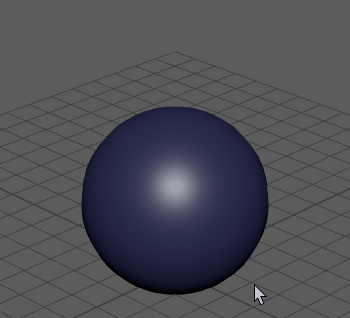
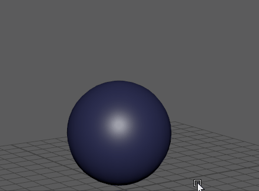

Maya 中的对象是几何体形状，例如上例中的球体。组件用于将对象分成多个部分，例如：
- 顶点（对象曲面上覆盖的点）
- 面（用于拆分对象曲面的各个平铺）
- 边（每个面的边）

对象模式下的球体：单击鼠标右键可选择其不同的组件
可按 F8 键在“对象”(Object)和“组件”(Component)模式之间来回翻转。视口中会显示一条消息，以指示您已更改模式。

按 F8 键可在各选择模式间切换
选择对象
- 通过按 F8 键确保 Maya 处于“对象”(Object)选择模式（请参见选择模式）。
- 从“工具箱”(Tool Box)中拾取“选择工具”(Select Tool)
 ，或者单击 Q 键并单击对象。您还可以：
，或者单击 Q 键并单击对象。您还可以：
- 按住 Shift 键并单击以包括和排除最后一个选择
- 按住 Shift + Ctrl 键并单击以始终添加到当前选择
若要从当前选择中移除某个对象，请按住 Ctrl 键并单击。
选择多个对象时，最后选择的对象将以不同于其他选定对象的颜色绘制。这称为关键对象。某些工具和操作使用关键对象来确定要对选择进行的操作。例如，在变换多个对象时，变换将使用关键对象的枢轴点。
选择组件
- 通过按 F8 键确保 Maya 处于“组件”(Component)选择模式（请参见选择模式）。
- 在对象上单击鼠标右键，然后从显示的弹出菜单中选择组件类型。（例如，选择“边”(Edge)以仅选择边，或者选择“顶点”(Vertex)以仅选择顶点。） 请参见选择特定的组件类型。
提示：您还可以在软选择模式（按 B 键）中选择组件。这对于雕刻平滑对象或将平滑整合的渐变或轮廓顺利添加到几何体十分有用，无需手动变换每个顶点。